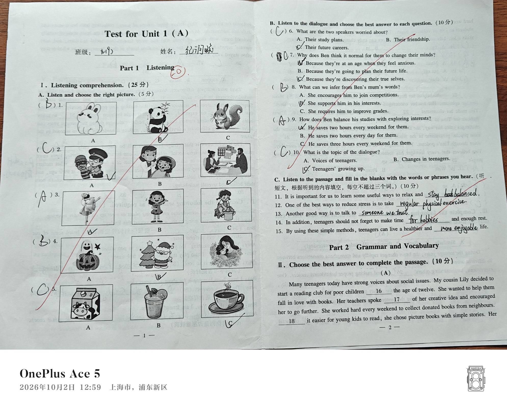
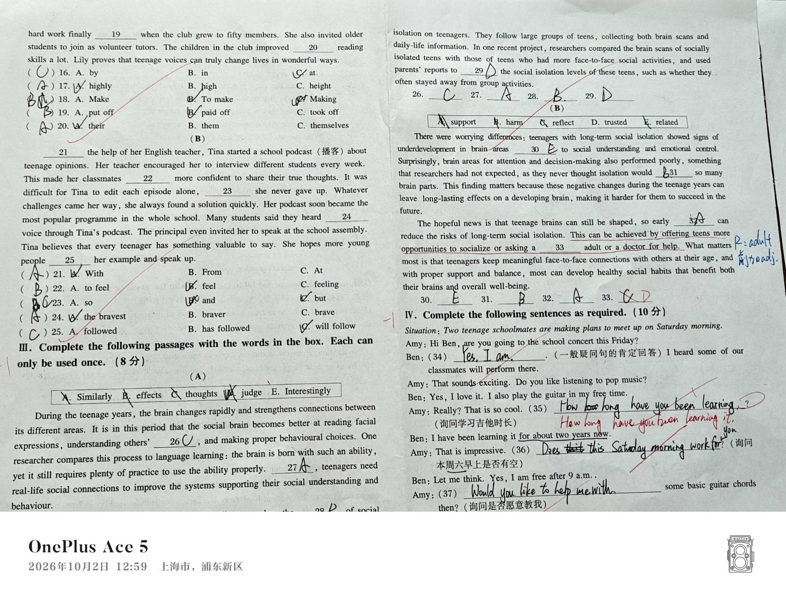
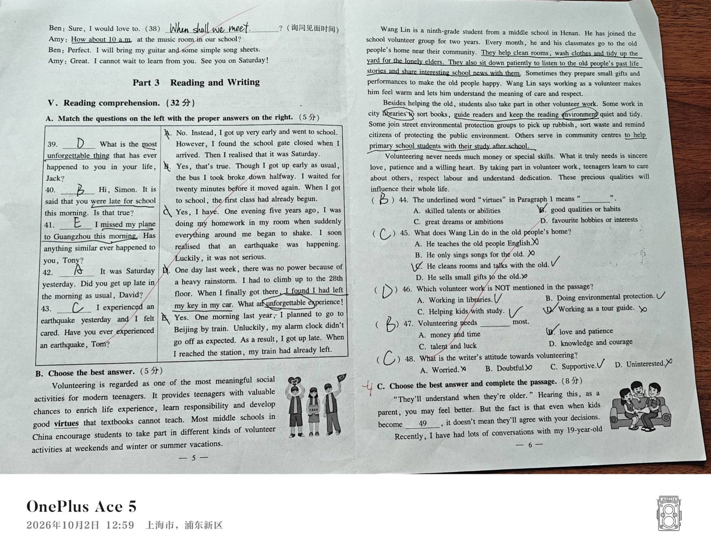
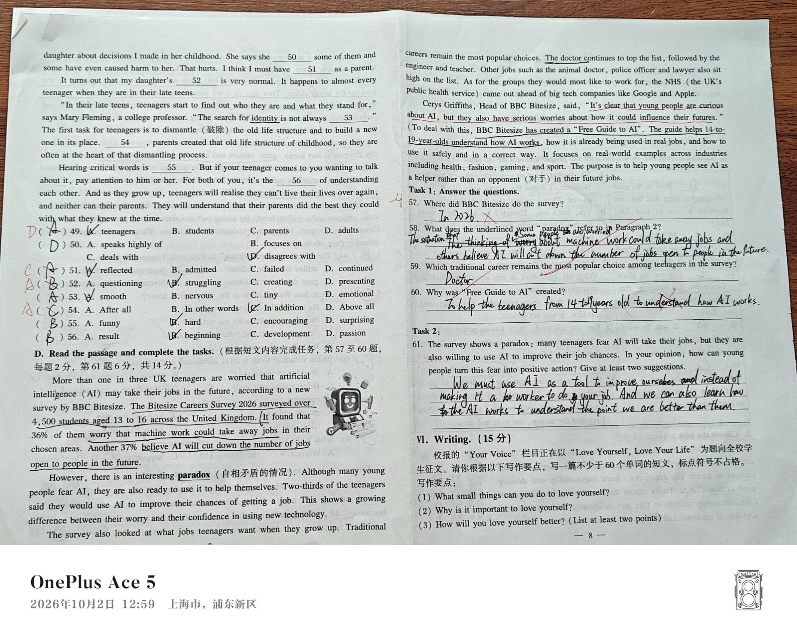

2026-10-02 · 单元测
20261002-单元测-英语-p1.jpg

20261002-单元测-英语-p2.jpg

20261002-单元测-英语-p3.jpg

20261002-单元测-英语-p4.jpg

原件在 RAW/试卷/，已入库 Git。判分如有争议，翻这里核对。
先看结构，再看细节。哪一块塌得最狠，先补哪一块。
| 模块 | 题号 | 满分 | 实得 | 得分率 | 卷面依据 |
|---|---|---|---|---|---|
| I 听力 | 1-15 | 25 | 待确认 | — | 1-10 图选与对话全对；11 仅错 1 空（stay but balanced → stay balanced），12-15 全对。实得留空：听力 C 只标「10 分」共 5 空，卷面无单空分值，写 24 或 25 都是等分折算 |
| II 语法与词汇 | 16-25 | 10 | 10 | 100% | 16-25 逐题核对，红笔全部为 √，无一订正 |
| III 完形填空 | 26-33 | 8 | 7 | 87.5% | 26-32 全对；33 写 D(trusted)，红笔划掉改 C(related) |
| IV 句子完成 | 34-38 | 10 | 8 | 80% | 34 ✓、37 ✓、38 ✓；35 漏宾语 it、36 疑有漏词 |
| V-A 匹配 | 39-43 | 5 | 5 | 100% | D B E A C，红笔全 √ |
| V-B 选择 | 44-48 | 5 | 5 | 100% | 五题红笔全 ✓ |
| V-C 完形 | 49-56 | 8 | 8 | 100% | 逐题核对，红笔全 ✓ |
| V-D 简答 | 57-60 | 8 | 待确认 | — | 卷面标注每题 2 分。57 答 In 2026 被红笔划掉（确定失分）；58 老师批注 What was?、59 ✓、60 疑有词数问题，实际失分空数无法从卷面确定 |
| V-D 开放题 | 61 | 6 | 待确认 | — | 卷面标注第 61 题 6 分。已作答（给出两条建议），红笔批改未见，得分待老师确认 |
| VI 写作 | 62 | 15 | 缺失 | — | 第 8 页仅拍到题目要求，作文正文与批改均未拍摄 |
full/lost 一律保留 null，不做等分估算。逐题判分，把「考了多少分」变成「不会什么」。
每条都标注了卷面证据——判错因看的是红笔改了什么，不是只看对错。
| 题号 | 模块 | 错因归类 | 卷面证据 | 错因（看中间步骤判定） |
|---|---|---|---|---|
| 11 | 听力 C | 审题错误 | 写 stay but balanced，红笔把 but 划掉，改为 stay balanced |
辨词不细——听到 balanced 但没听出前面的 but。不是听不懂，是听漏了连读 |
| 33 | 完形 III | 概念不清 | 写 D (trusted)，红笔划掉改 C (related)；旁边老师批注 related to | 语境辨词——"ask a ___ adult or a doctor" 要的是关系，trusted 讲的是信任，语义对不上。查生词表能懂，但没放回句子里读 |
| 35 | 句子完成 IV | 表达不规范 | 写 How long have you been learning?，老师红笔在 learning 后补了 it 并画斜线 |
动词后漏宾语——learn 是及物动词，必须带 it。句子结构意识够，只是落笔时漏了 |
| 57 | 阅读 D 每题 2 分 | 审题错误 | 答 In 2026，红笔打叉 |
审题错误——问的是 Where（调查在哪儿做的），答的却是文中出现的年份。抓住了一个显眼的名词就作答，没看问句的疑问词 |
| 36 | 句子完成 IV | 存疑 | 写 Does this Saturday morning work for you?，该行未见红笔 √ |
存疑，不下定论——句子本身通顺。可能被判错，也可能只是批改时漏勾。需对照原卷答案核实 |
| 58 / 61 | 阅读 D | 存疑 | 58 写了两句含"some people are worried… others believe…"，老师批注 What was?；61 已作答但未见批改 | 存疑——58 可能是表述未落到 paradox 的对比结构上；61 得分需老师确认 |
lost 留 null 并标 scorePending: true——不能替老师判卷。full / lost 留 null。这一节是全篇最有价值的部分：主要失分在哪、为什么、下一步先补什么。
| 类型 | 题目 | 共同特征 | 救法 |
|---|---|---|---|
| ① 收尾没查 （占 3/4） |
35 漏 it 36 疑漏词 57 看错疑问词 |
句子/答案的主体都对，只差最后一个动作——漏宾语、没回读问句 | 固定检查动作，不是重学：写完读一遍、答完对一次问句 |
| ② 语感/辨词 （占 1/4） |
11 听漏 but 33 trusted/related |
需要"在语境里重新过一遍"，光背单词表不够 | 针对性重练：精听连读 + 语境辨词 |
scoreConfirmed 保持 false，score.got / score.full 留 null。请勿把本页数字当作最终成绩。RAW/试卷答案/ 目录为空，本卷没有任何官方答案可对照。
所有 answerKey 字段均为依据题目与红笔批改反推得出，不能替代原始答案。